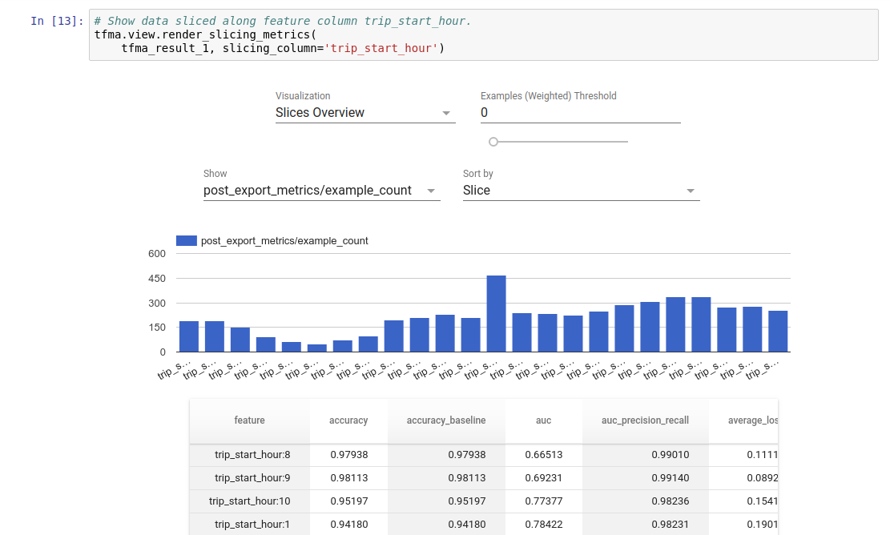

Getting Started with TensorFlow Model Analysis¶
Overview¶
TensorFlow Model Analysis (TFMA) is a library for performing model evaluation.
- For: Machine Learning Engineers or Data Scientists
- who: want to analyze and understand their TensorFlow models
- it is: a standalone library or component of a TFX pipeline
- that: evaluates models on large amounts of data in a distributed manner on the same metrics defined in training. These metrics are compared over slices of data, and visualized in Jupyter or Colab notebooks.
- unlike: some model introspection tools like tensorboard that offer model introspection
TFMA performs its computations in a distributed manner over large amounts of data using Apache Beam. The following sections describe how to setup a basic TFMA evaluation pipeline. See architecture more details on the underlying implementation.
If you just want to jump in and get started, check out our colab notebook.
This page can also be viewed from tensorflow.org.
Model Types Supported¶
TFMA is designed to support tensorflow based models, but can be easily extended
to support other frameworks as well. Historically, TFMA required an
EvalSavedModel be created to use TFMA, but the latest version of TFMA supports
multiple types of models depending on the user's needs.
Setting up an EvalSavedModel should only be required if a
tf.estimator based model is used and custom training time metrics are
required.
Note that because TFMA now runs based on the serving model, TFMA will no longer
automatically evaluate metrics added at training time. The exception to this
case is if a keras model is used since keras saves the metrics used alongside
the saved model. However, if this is a hard requirement, the latest TFMA is
backwards compatible such that an EvalSavedModel can still be run in a TFMA
pipeline.
The following table summarizes the models supported by default:
| Model Type | Training Time Metrics | Post Training Metrics |
|---|---|---|
| TF2 (keras) | Y* | Y |
| TF2 (generic) | N/A | Y |
| EvalSavedModel (estimator) | Y | Y |
| None (pd.DataFrame, etc) | N/A | Y |
- Training Time metrics refers to metrics defined at training time and saved
with the model (either TFMA EvalSavedModel or keras saved model). Post
training metrics refers to metrics added via
tfma.MetricConfig. - Generic TF2 models are custom models that export signatures that can be used for inference and are not based on either keras or estimator.
Note: Only training time metrics added via model.compile (not model.add_metric) are currently supported for keras.
Note: When supported, training time metrics are enabled by default. However,
they can be disabled via the include_default_metrics setting in
tfma.Options.
Note: To run with an EvalSavedModel, just set signature_name: "eval" in the
model spec.
See FAQ for more information on how to setup and configure these different model types.
Setup¶
Before running an evaluation, a small amount of setup is required. First, a
tfma.EvalConfig
object must be defined that provides specifications for the model, metrics, and
slices that are to be evaluated. Second a
tfma.EvalSharedModel
needs to be created that points to the actual model (or models) to be used
during the evaluation. Once these have been defined, evaluation is performed by
calling
tfma.run_model_analysis
with an appropriate dataset. For more details, see the setup guide.
If running within a TFX pipeline, see the TFX guide for how to configure TFMA to run as a TFX Evaluator component.
Examples¶
Single Model Evaluation¶
The following uses tfma.run_model_analysis to perform evaluation on a serving
model. For an explanation of the different settings needed see the
setup guide.
Note: To run with an EvalSavedModel, just set signature_name: "eval" in the
model_spec.
Note: this uses Beam's local runner which is mainly for local, small-scale experimentation.
# Run in a Jupyter Notebook.
from google.protobuf import text_format
eval_config = text_format.Parse("""
## Model information
model_specs {
# This assumes a serving model with a "serving_default" signature.
label_key: "label"
example_weight_key: "weight"
}
## Post export metric information
metrics_specs {
# This adds AUC as a post training metric. If the model has built in
# training metrics which also contains AUC, this metric will replace it.
metrics { class_name: "AUC" }
# ... other post training metrics ...
# Plots are also configured here...
metrics { class_name: "ConfusionMatrixPlot" }
}
## Slicing information
slicing_specs {} # overall slice
slicing_specs {
feature_keys: ["age"]
}
""", tfma.EvalConfig())
eval_shared_model = tfma.default_eval_shared_model(
eval_saved_model_path='/path/to/saved/model', eval_config=eval_config)
eval_result = tfma.run_model_analysis(
eval_shared_model=eval_shared_model,
eval_config=eval_config,
# This assumes your data is a TFRecords file containing records in the
# tf.train.Example format.
data_location='/path/to/file/containing/tfrecords',
output_path='/path/for/output')
tfma.view.render_slicing_metrics(eval_result)
For distributed evaluation, construct an Apache Beam
pipeline using a distributed runner. In the pipeline, use the
tfma.ExtractEvaluateAndWriteResults for evaluation and to write out the
results. The results can be loaded for visualization using
tfma.load_eval_result.
For example:
# To run the pipeline.
from google.protobuf import text_format
from tfx_bsl.tfxio import tf_example_record
eval_config = text_format.Parse("""
## Model information
model_specs {
# This assumes a serving model with a "serving_default" signature.
label_key: "label"
example_weight_key: "weight"
}
## Post export metric information
metrics_specs {
# This adds AUC and as a post training metric. If the model has built in
# training metrics which also contains AUC, this metric will replace it.
metrics { class_name: "AUC" }
# ... other post training metrics ...
# Plots are also configured here...
metrics { class_name: "ConfusionMatrixPlot" }
}
## Slicing information
slicing_specs {} # overall slice
slicing_specs {
feature_keys: ["age"]
}
""", tfma.EvalConfig())
eval_shared_model = tfma.default_eval_shared_model(
eval_saved_model_path='/path/to/saved/model', eval_config=eval_config)
output_path = '/path/for/output'
tfx_io = tf_example_record.TFExampleRecord(
file_pattern=data_location, raw_record_column_name=tfma.ARROW_INPUT_COLUMN)
with beam.Pipeline(runner=...) as p:
_ = (p
# You can change the source as appropriate, e.g. read from BigQuery.
# This assumes your data is a TFRecords file containing records in the
# tf.train.Example format. If using EvalSavedModel then use the following
# instead: 'ReadData' >> beam.io.ReadFromTFRecord(file_pattern=...)
| 'ReadData' >> tfx_io.BeamSource()
| 'ExtractEvaluateAndWriteResults' >>
tfma.ExtractEvaluateAndWriteResults(
eval_shared_model=eval_shared_model,
eval_config=eval_config,
output_path=output_path))
# To load and visualize results.
# Note that this code should be run in a Jupyter Notebook.
result = tfma.load_eval_result(output_path)
tfma.view.render_slicing_metrics(result)
Model Validation¶
To perform model validation against a candiate and baseline, update the config
to include a threshold setting and pass two models to tfma.run_model_analysis.
For example:
# Run in a Jupyter Notebook.
from google.protobuf import text_format
eval_config = text_format.Parse("""
## Model information
model_specs {
# This assumes a serving model with a "serving_default" signature.
label_key: "label"
example_weight_key: "weight"
}
## Post export metric information
metrics_specs {
# This adds AUC and as a post training metric. If the model has built in
# training metrics which also contains AUC, this metric will replace it.
metrics {
class_name: "AUC"
threshold {
value_threshold {
lower_bound { value: 0.9 }
}
change_threshold {
direction: HIGHER_IS_BETTER
absolute { value: -1e-10 }
}
}
}
# ... other post training metrics ...
# Plots are also configured here...
metrics { class_name: "ConfusionMatrixPlot" }
}
## Slicing information
slicing_specs {} # overall slice
slicing_specs {
feature_keys: ["age"]
}
""", tfma.EvalConfig())
eval_shared_models = [
tfma.default_eval_shared_model(
model_name=tfma.CANDIDATE_KEY,
eval_saved_model_path='/path/to/saved/candiate/model',
eval_config=eval_config),
tfma.default_eval_shared_model(
model_name=tfma.BASELINE_KEY,
eval_saved_model_path='/path/to/saved/baseline/model',
eval_config=eval_config),
]
output_path = '/path/for/output'
eval_result = tfma.run_model_analysis(
eval_shared_models,
eval_config=eval_config,
# This assumes your data is a TFRecords file containing records in the
# tf.train.Example format.
data_location='/path/to/file/containing/tfrecords',
output_path=output_path)
tfma.view.render_slicing_metrics(eval_result)
tfma.load_validation_result(output_path)
Visualization¶
TFMA evaluation results can be visualized in a Jupyter notebook using the frontend components included in TFMA. For example:
.